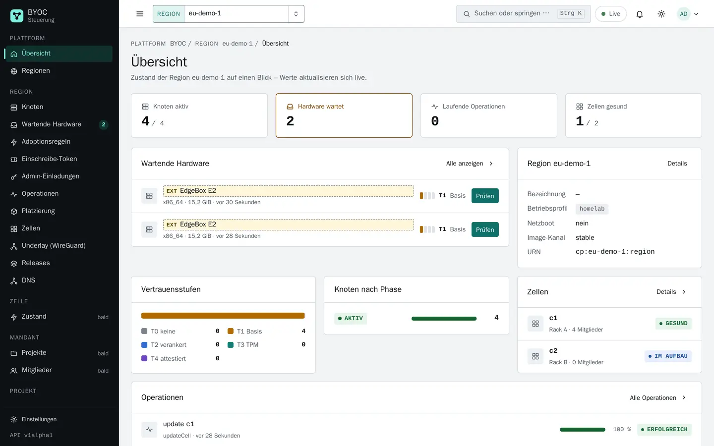
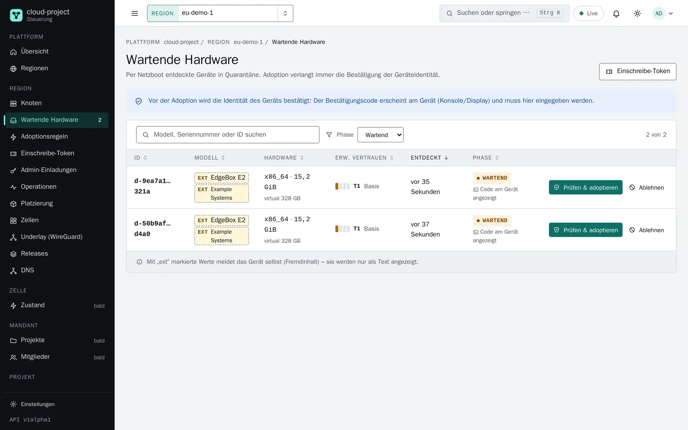
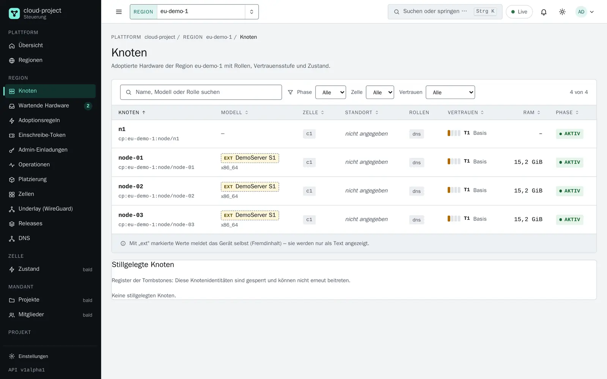
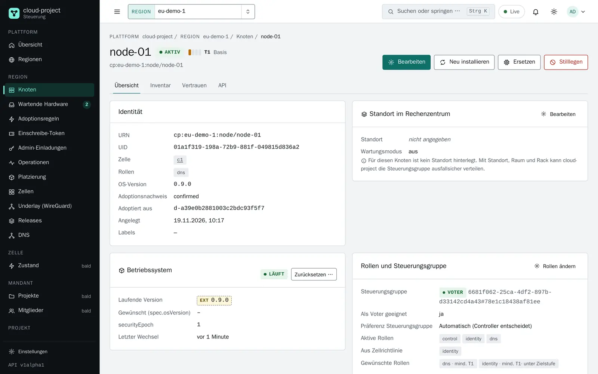
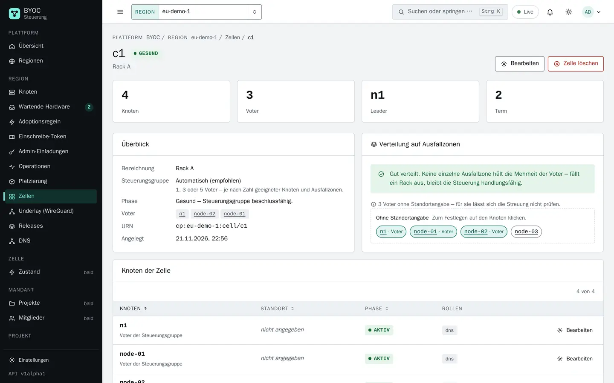
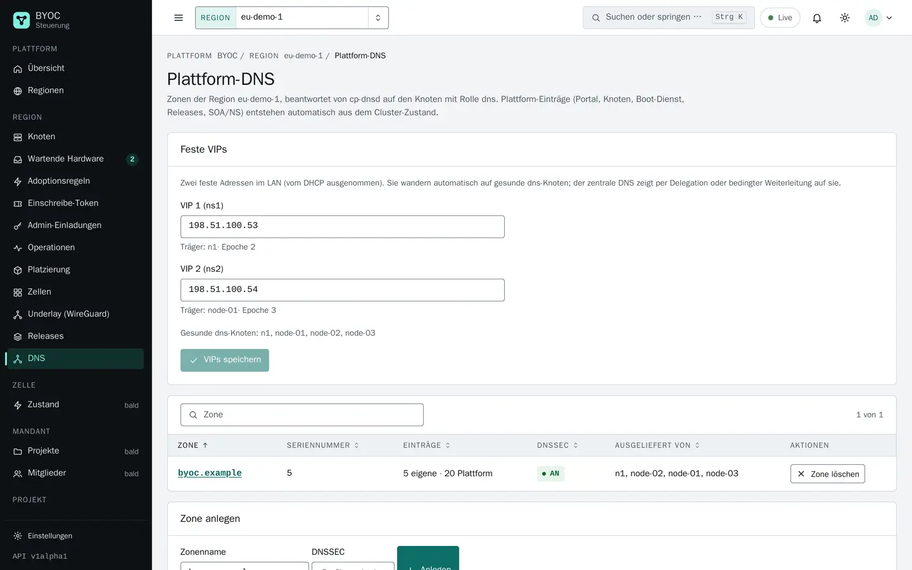
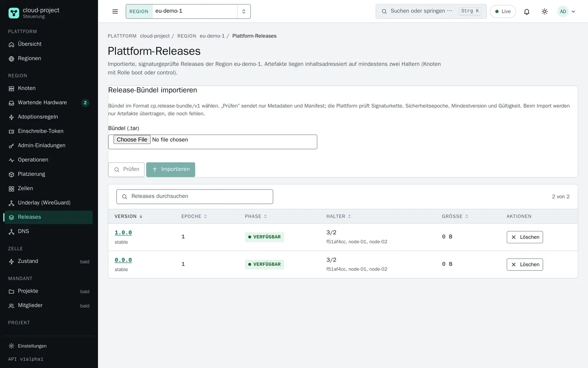
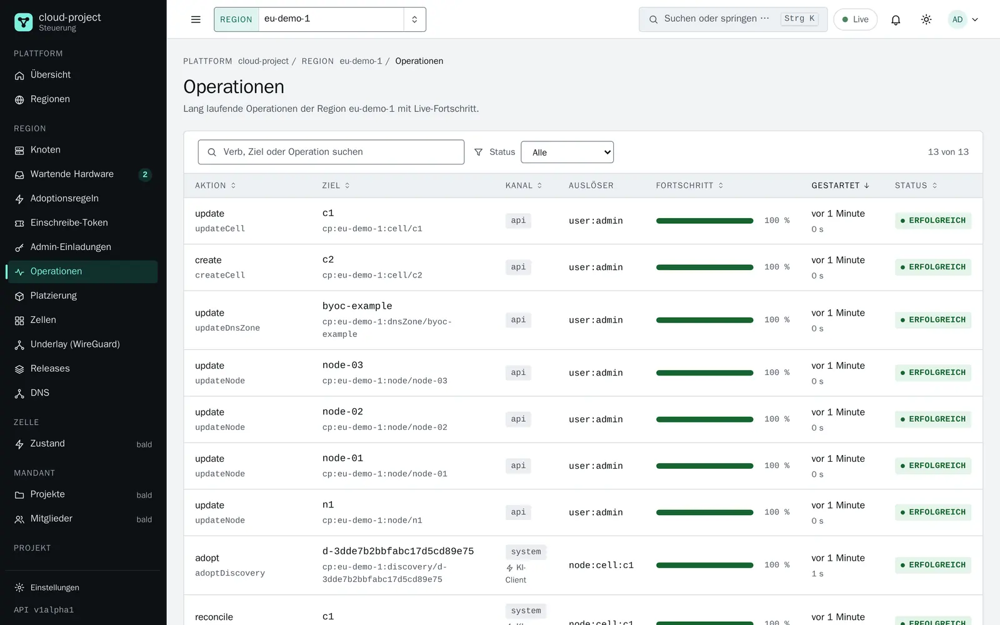
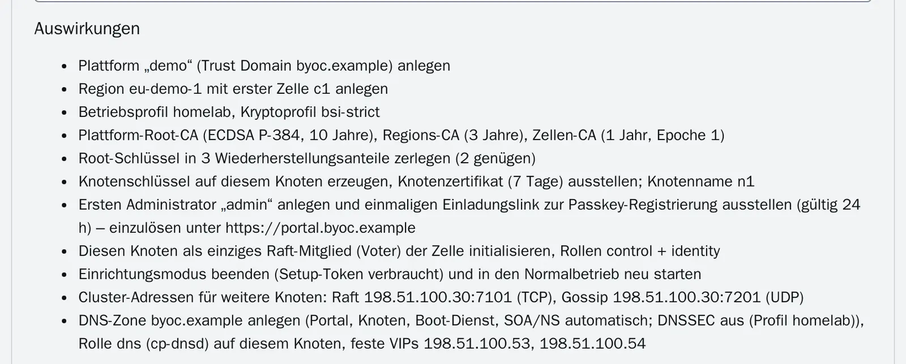

Das Web-Portal ist einer von drei gleichwertigen Zugängen zur Plattform – neben REST-API (mit cpctl) und MCP. Es wird von jedem Knoten selbst ausgeliefert, braucht keinen separaten Server und folgt hell/dunkel der Systemeinstellung, genau wie diese Seite. Die Aufnahmen stammen aus einem echten Mehrknoten-Lab: vier Knoten in Containern, Region eu-demo-1, Portal-Adresse portal.byoc.example. Alle Namen, Adressen und Geräte sind fiktiv.
Alpha – die Oberfläche kann sich ändern. Die Aufnahmen zeigen den Entwicklungsstand vom November 2026. Bereiche mit dem Hinweis „bald“ (Mandanten, Projekte, VMs, Volumes, Netze) folgen in späteren Phasen.
Übersicht#
Der Zustand einer Region auf einen Blick: aktive Knoten, wartende Hardware, laufende Operationen und die Gesundheit der Zellen. Werte aktualisieren sich live über Watch-Ströme der API.

Wartende Hardware#
Neu entdeckte Geräte warten in Quarantäne. Ihre Angaben sind Fremdinhalt („ext“) und werden nur als Text angezeigt; adoptiert wird erst nach Bestätigung der Geräteidentität per Code oder automatisch über eine Adoptionsregel.

Knoten#
Alle adoptierten Knoten der Region mit Modell, Zelle, Standort, Rollen, Vertrauensstufe und Phase – filter- und sortierbar.

Knotendetail#
Identität, Betriebssystem-Stand (A/B-Updates), Standort im Rechenzentrum sowie Rollen und Mitgliedschaft in der Steuerungsgruppe. Neu installieren, Ersetzen und Stilllegen sind privilegierte Aktionen mit Bestätigung.

Zellen und Steuerungsgruppe#
Eine Zelle bündelt Knoten mit eigener Raft-Steuerungsgruppe. Die Ansicht zeigt Voter, Leader und Term und prüft, ob die Voter so über Ausfallzonen verteilt sind, dass der Ausfall eines Racks die Steuerung nicht lahmlegt.

Plattform-DNS#
Zonen der Region, beantwortet von <code>cp-dnsd</code> auf den Knoten mit Rolle dns, mit festen VIPs, DNSSEC und automatisch erzeugten Plattform-Einträgen für Portal und Knoten.

Plattform-Releases#
Signierte Release-Bündel werden geprüft (Signaturkette, Sicherheitsepoche, Mindestversion) und inhaltsadressiert auf mehreren Haltern abgelegt; von dort beziehen die Knoten ihre Updates.

Operationen#
Jede Änderung ist eine nachvollziehbare Operation mit Kanal (API, Portal, MCP, System), Auslöser, Fortschritt und Ergebnis.

Einrichtungsassistent#
Die Ersteinrichtung läuft im Browser: Setup-Token und Bestätigungscode von der Konsole des ersten Knotens, Hardware- und Netzprüfung, dann Plattform, Region, Portal-Adresse und DNS festlegen. Vor der Ausführung zeigt der Assistent den vollständigen Plan.

Mehr zu den Konzepten hinter den Ansichten: Portal-Konzept, Funktionsumfang, Architektur und die Dokumentation.